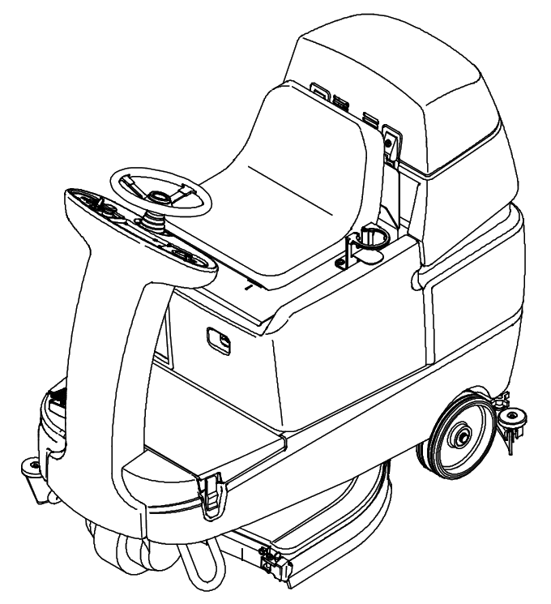

Tennant T7 · Manual de partes 9013606
¿Qué repuesto necesitas?
/
Prueba:
Plano general
Selecciona una zona de la máquina
Imagen no encontrada
Coloca la vista general en
assets/t7_full.png
- Equipo
- Tennant T7
- Plano
- Vista general
- Manual
- 9013606
- Elaboró
- INGPAR S.A.S.